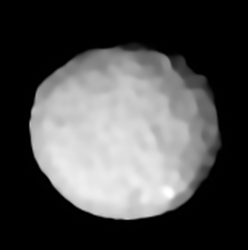
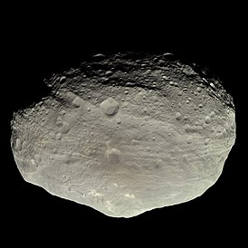
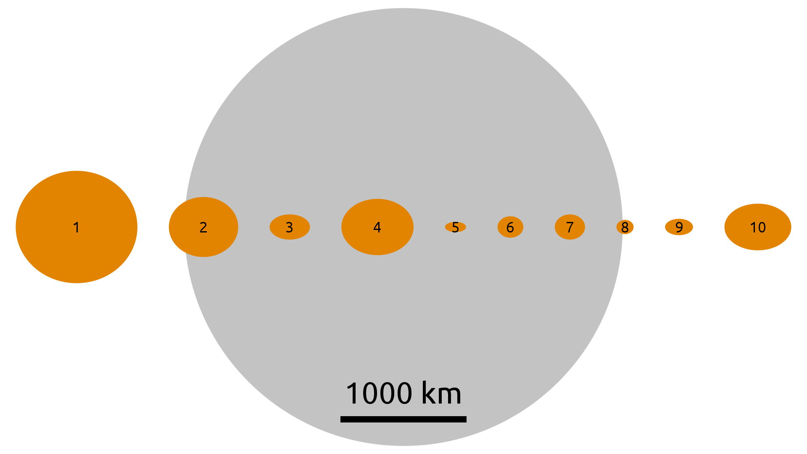
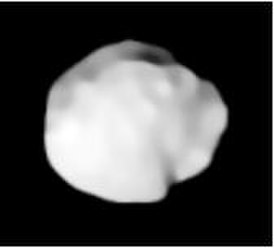
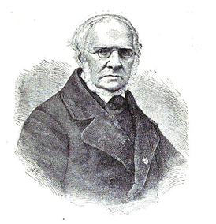
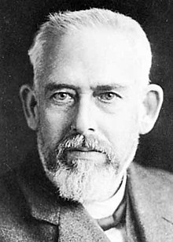
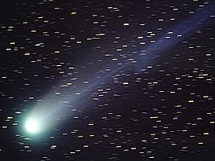
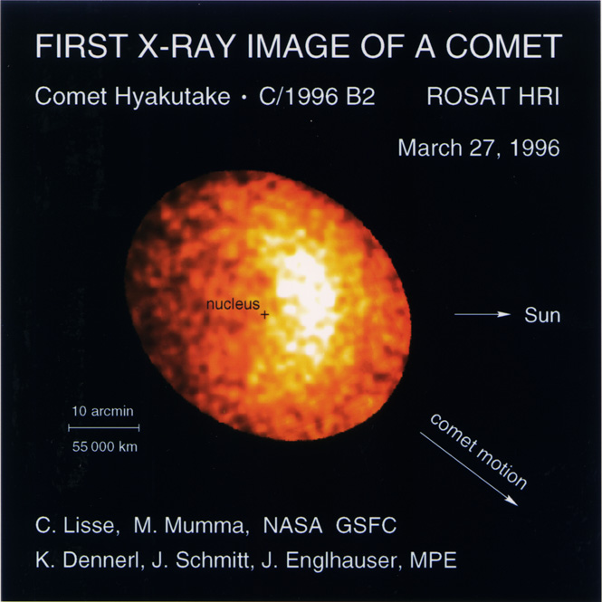
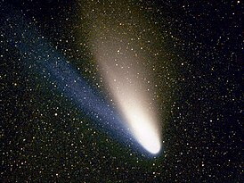
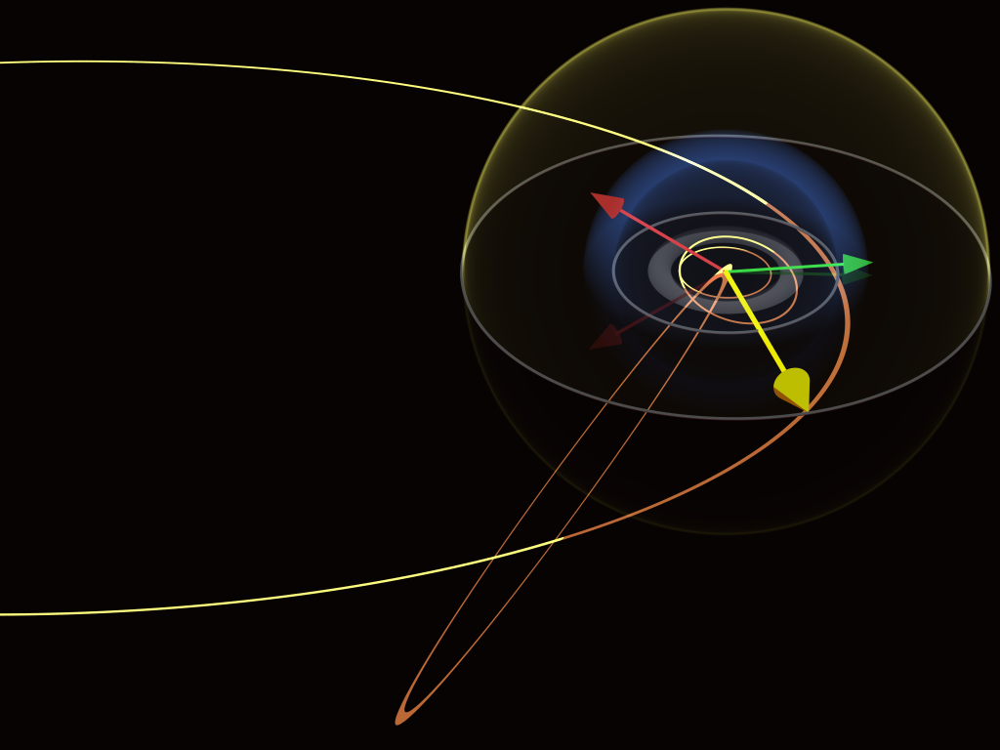

Палада
Палла́да (лат. Pallas) — второй открытый астероид. Относится к классу B. Имеет большой наклон орбиты — 34,8°.
Открыт 28 марта 1802 года Генрихом Вильгельмом Ольберсом и назван в честь Афины Паллады. Задолго до этого — в 1779 году — Палладу видел, но принял за звезду Шарль Мессье, который отметил её на своей карте движения кометы Бодe.
Относится к главному поясу астероидов. Долгое время Паллада считалась вторым по размерам телом главного пояса астероидов — сначала её диаметр оценивался в 608 км, затем в 582 × 556 × 500 км (считалось, что превосходит Весту). В августе 2006 года Церера была переведена в статус карликовой планеты, и Паллада стала занимать первое место по размеру и второе место по массе (на 25 % легче Весты) среди астероидов главного кольца. Однако уточнённый размер Паллады (512 ± 6 км) оказался чуть меньше диаметра Весты (525,4 ± 0,2 км), и Паллада снова стала вторым по размерам телом главного пояса астероидов.
Японский инфракрасный спутник Akari выявил наличие на Палладе гидратированных минералов.
Изображения, полученные с помощью инструмента SPHERE на Очень Большом Телескопе Европейской Южной Обсерватории в Чили, показали, что поверхность Паллады покрыта большим количеством кратеров. За свою историю Паллада должна была пережить в два-три раза больше ударов, чем Веста и карликовая планета Церера. Ударный бассейн в районе экватора мог образоваться 1,7 млрд л. н. в результате столкновения с астероидом диаметром от 20 до 40 км. Яркое пятно в южном полушарии может объясняться наличием в этом регионе поверхностных солевых отложений.
По имени астероида Паллада назван химический элемент палладий, открытый в 1803 году английским химиком Вильямом Волластоном.
Предполагается, что в 2024 году в качестве попутного груза вместе с космическим кораблём «Психея» в космос будет запущен космический аппарат «Афина»[en], который отправится исследовать астероид Паллада.
Паллада, как предполагается, подверглась термическим изменениям и гравитационной дифференциации Это может указывать на то, что Паллада является остатком протопланеты.
В мае 1978 года было выдвинуто предположение о существовании у астероида небольшого спутника диаметром около 1 км, которое впоследствии было опровергнуто.

Паллада
Церера
Юпитер
Марс
Земля
Солнце
Веста
Ве́ста (лат. Vesta) — первый по размерам и массе из астероидов в главном астероидном поясе. До того как Церера была признана карликовой планетой, по размеру Веста считалась третьим астероидом после неё и Паллады, а по массе была второй, уступая только Церере. Однако уточнённый размер Паллады (512 ± 6 км) оказался чуть меньше диаметра Весты (525,4 ± 0,2 км), и Веста стала первым по размерам астероидом главного пояса. Это также самый яркий астероид из всех и единственный, который можно наблюдать невооружённым глазом. Веста была открыта 29 марта 1807 года Генрихом Вильгельмом Ольберсом и по предложению Карла Гаусса получила имя древнеримской богини дома и домашнего очага Весты.
Орбита
Орбита Весты лежит во внутренней части пояса астероидов, в пределах основной щели Кирквуда на 2,5 а.е. Орбита слабоэллиптичная с умеренным наклоном к плоскости эклиптики. Астероид обращается вокруг Солнца за 3,63 юлианского года.
Физические характеристики
Размеры Весты составляют 578 × 560 × 458 км, и, если бы асимметрия формы была бы чуть меньше, то, согласно уточнённой классификации тел Солнечной системы, её следовало бы отнести к классу карликовых планет. С планетами Весту сближает и сложная геологическая история. Вскоре после формирования началась дифференциация её недр: образовались железо-никелевое ядро и каменная мантия. За счёт тепла, выделяемого при распаде радиоактивных изотопов, ядро и значительная часть мантии расплавились. На протяжении последующих эпох происходило постепенное остывание и кристаллизация пород мантии и коры, что в конечном итоге привело к чрезвычайному разнообразию минералов, составляющих Весту. Об этом мы можем судить по метеоритам и малым астероидам класса V, родоначальницей которых является Веста. Лишь немного превышая Палладу по объёму и по диаметру, Веста на 25 % превышает её по массе — 2,59076⋅1020 кг.
В 1990-х годах с помощью телескопа «Хаббл» удалось в общих чертах рассмотреть поверхность Весты и получить представление о её составе.
Самая заметная деталь поверхности Весты — огромный ударный кратер Реясильвия, расположенный вокруг южного полюса. По различным оценкам, кратер имеет диаметр от 475 до 500 километров. Является одним из самых глубоких кратеров в Солнечной системе, глубина воронки порядка 20—25 километров. В центральной части кратера (над точкой удара) возвышается центральная горка высотой около 22 км и диаметром 180 км, которая является второй по относительной высоте из известных вершин Солнечной системы. Размеры кратера сопоставимы с размерами астероида; остаётся загадкой, как Веста смогла пережить столь чудовищный катаклизм. Вероятно, что многочисленные астероиды класса V — это обломки, разлетевшиеся после этого столкновения. Спектрометрический анализ показывает, что кратер обнажил несколько слоёв коры Весты и частично — её мантию.
На Весте обнаружены и другие крупные кратеры размерами до 150 км и глубиной до 7 км. Поверхность Весты существенно неоднородна: восточное полушарие имеет более высокое альбедо, западное же полушарие более тёмное, встречаются участки с аномально низким альбедо. Считается, что более тёмные области соответствуют базальтовым равнинам, аналогам лунных «морей», а более светлые — сильно кратерированным возвышенностям.
Веста вращается вокруг оси за 5,342 часа. Наклон оси вращения — 29°.
Температура на поверхности Весты колеблется от −106 °C до −3 °C
Сравнение размеров десяти первых открытых астероидов с земной Луной. Веста — четвёртая слева. Крайний левый объект — Церера, которую сейчас относят к карликовым планетам
История изучения
1981 год — в ESA представлен проект космической миссии к астероиду. Планировалось, что аппарат, названный AGORA (англ. Asteroidal Gravity Optical and Radar Analysis), будет запущен в 1990—1994 году и совершит два пролёта крупных астероидов, и Веста рассматривалась как главный кандидат. Однако ESA отклонило предложенную миссию.
27 сентября 2007 года был запущен космический зонд НАСА «Dawn» — первая космическая миссия к Весте. Планировалось, что зонд будет находиться на орбите астероида один год, с июля 2011 по июль 2012. Этот период совпадает с концом лета в южном полушарии Весты, поэтому кратер Реясильвия на южном полюсе будет освещён Солнцем. Так как сезон на Весте длится одиннадцать месяцев, то северное полушарие вместе с ожидаемыми компрессионными разломами напротив кратера окажутся в поле зрения камер зонда до того, как он покинет орбиту.
Первое изображение (необработанное) Весты, полученное зондом «Dawn» на расстоянии 1,2 млн км от астероида. NASA/JPL-Caltech/UCLA/MPS/DLR/IDA 3 мая 2011 года космический зонд «Dawn» первый раз сфотографировал Весту (с расстояния 1,2 млн км). Когда он достиг Весты, стало возможным точно вычислить её массу по гравитационному взаимодействию. Это позволит уточнить оценки масс астероидов, на которые, в свою очередь, воздействует масса Весты.
1 июня 2011 года космическим аппаратом «Dawn» были получены первые снимки Весты, на которых видно вращение астероида.
16 июля 2011 года аппарат вышел на орбиту вокруг Весты.
5 сентября 2012 года аппарат, завершив сбор и передачу данных, покинул орбиту вокруг Весты и направился в сторону Цереры — самого большого тела в поясе астероидов. Это первый космический аппарат, который может выходить на орбиту более чем одного объекта (благодаря двигателю на ионной тяге).
Юнона
Юно́на (лат. Juno) — астероид главного астероидного пояса. Открыт 1 сентября 1804 г. немецким астрономом Карлом Хардингом в обсерватории Шрётера. Назван в честь древнеримской богини, супруги Юпитера Юноны. Астероид обращается вокруг Солнца за 4,37 юлианских лет. Установлено, что его масса составляет 1 % массы всего главного пояса Юнона — самый крупный астероид класса S после Эвномии. Его масса составляет 3 % массы крупнейшего тела Пояса астероидов — Цереры.
Сравнение размеров десяти первых открытых астероидов с земной Луной. Веста — четвёртая слева. Крайний левый объект — Церера, которую сейчас относят к карликовым планетам
Джузе́ппе Пья́цци

Джузе́ппе Пья́цци (также устаревшее Пиацци, итал. Giuseppe Piazzi; 1746—1826) — итальянский астроном, математик и священник. Член Лондонского королевского общества (1804), иностранный почётный член Петербургской Академии наук (1805), иностранный член Парижской академии наук (1817; корреспондент с 1804).
Биография
Образование получил в Турине и Риме, где изучал философию и богословие. В 1764 году вступил в орден театинцев (Милан). В 1780 году направился на Сицилию, чтобы полностью посвятить свою жизнь астрономии и математике, в том же году стал профессором математики в Палермском университете. В 1787—1788 годы ездил в Париж и Лондон для знакомства с работой ведущих европейских обсерваторий, после чего выступил с инициативой создания обсерватории в Палермо, которая была построена на средства герцога Караманико. Строительство обсерватории в Норманнском дворце Палермо было завершено в 1791 году, Пьяцци возглавлял её до конца жизни. В 1817—1826 году он одновременно возглавлял обсерваторию в Неаполе.
Спроектировал большой полутораметровый вертикальный круг, который был изготовлен в Англии Д. Рамсденом и установлен в Палермской обсерватории. Составил два звёздных каталога, в 1803 году — «Praecipuarum stellarum inerantium positiones mediae ineunte seculo XIX», в 1814 году — второе издание. Первое издание содержало координаты 6748 звёзд, второе — 7646 звёзд. Сопоставляя данные своих наблюдений с данными Лакайля и Майера, Пьяцци определил собственные движения ряда звёзд.
Первооткрыватель карликовой планеты Цереры. 1 января 1801 году открыл новое светило, орбита которого, впервые вычисленная Гауссом, оказалась расположенной между орбитами Марса и Юпитера. Пьяцци назвал новую планету Церерой в честь богини плодородия и земледелия — покровительницы Сицилии. В 1803 году награждён премией им. Лаланда Парижской Академии наук.
В его честь назван астероид Пиацция, а также кратер на Луне.
Хенке, Карл Людвиг
Карл Людвиг Хенке (нем. Karl Ludwig Hencke; 8 апреля 1793, Дризен, — 21 сентября 1866, Мариенвердер) — немецкий астроном-любитель.
Хенке открыл два астероида. Первый, 5 Астрея, примечателен тем, что это был первый астероид, открытый после того, как в 1807 году был обнаружен последний астероид из первой четверки 4 Веста. Другие астрономы оставили дальнейшие поиски астероидов, будучи убеждены, что астероидов всего четыре. Однако в 1830 году Хенке начал свои поиски, и пятнадцать лет спустя они увенчались успехом. Астероид 2005 Хенке назван в его честь.
Вольф, Максимилиан
Максимилиан Франц Йозеф Корнелиус Вольф (нем. Maximilian Franz Joseph Cornelius Wolf; 21 июня 1863, Гейдельберг — 3 октября 1932, Гейдельберг) — немецкий астроном, первопроходец в астрофотографии.
С 1902 по 1932 год был директором обсерватории Гейдельберг-Кёнигштуль. Внёс вклад в открытие (и повторное обнаружение) комет 14P/Вольфа и Вольфа — Харрингтона.
C 6 декабря 1924 года — член-корреспондент Российской академии наук (с 1925 года — АН СССР) в отделении физико-математических наук (по разряду математических наук (астрономия)).
Был соавтором открытий сверхновых звёзд: SN 1895A (a.k.a. VW Vir), SN 1909A (a.k.a. SS UMa), SN 1920A, с астрономом Карлом Райнмутом, SN 1926A.
В 1930 году награждён медалью Кэтрин Брюс.
В честь Вольфа назван астероид (827) Вольфиана, открытый в 1916 австрийским астрономом Иоганном Пализой. Также в 1935 году в честь Вольфа назван кратер на видимой стороне Луны. В честь сына Вольфа, Эрнеста, был назван астероид (698) Эрнестина, открытый в 1910 году.
C/1996 B2 (Хякутакэ)
Комета Хякутакэ, официальное название C/1996 B2 (Hyakutake) — долгопериодическая комета, открытая 30 января 1996 года японским астрономом-любителем Юдзи Хякутакэ. В марте 1996 года комета прошла сравнительно близко от Земли (её подход был одним из максимальных сближений комет с Землёй за последние 200 лет). Комета была очень яркой и легко наблюдалась невооружённым глазом в ночном небе, благодаря чему получила название «Большой кометы 1996 года». На некоторое время комета Хякутакэ затмила комету Хейла — Боппа, которая в это время приближалась к внутренней области Солнечной системы.
Наблюдение за кометой Хякутакэ привело к нескольким научным открытиям. Наиболее удивительным для учёных стало впервые обнаруженное рентгеновское излучение кометы, вызванное, вероятно, взаимодействием ионизированного солнечного ветра с нейтральными атомами в коме кометы. Кроме того, космический аппарат «Улисс» неожиданно для всех пересёк хвост кометы Хякутакэ на расстоянии более 500 млн км от ядра.
До последнего прохода кометы Хякутакэ через Солнечную систему её орбитальный период был равен 17 000 лет, но после взаимодействия с гравитационным полем планет-гигантов он увеличился до 70 000 лет или больше
Открытие
Комета была открыта 30 января 1996 года японским астрономом-любителем Юдзи Хякутакэ. К тому моменту он уже несколько лет занимался поиском комет, что во многом определило его переезд в префектуру Кагосима ради более тёмного неба сельских районов. Местом его обычных наблюдений была гора примерно в 15 км от его дома. Для обозрения звёздного неба он использовал мощный широкоугольный астрономический бинокль с 6-дюймовыми объективами (150 мм) Fujinon 25x150 MT-SX, установленный на монтировке.
Эта комета стала второй по счёту, открытой Хякутакэ. Первую, C/1995 Y1 он открыл 26 декабря 1995 года, однако в итоге та не достигла большой яркости: наблюдать её можно было только в телескоп. Пять недель спустя, наблюдая за C/1995 Y1 и окружающим пространством, он заметил ещё одну комету, всего в 4° от того участка неба, где ранее обнаружил первую. Вспоминая о своём состоянии в момент обнаружения новой кометы, Хякутакэ писал:
Честно говоря, я был немного растерян. Моя реакция была несколько трудной для понимания, так как изначально я намеревался поехать [на своё обычное место], чтобы сделать снимок первой кометы. Вторую комету я нашёл в том же месте, что и первую, рядом с созвездиями Весов и Гидры.
С трудом веря в свою удачу, Хякутакэ сообщил об открытии в Национальную астрономическую обсерваторию Японии. В тот же день открытие было подтверждено независимыми наблюдателями. В момент обнаружения комета находилась на расстоянии примерно 2 а. е. от Солнца, обладая видимой звёздной величиной 11,0m и угловым диаметром в 2,5—3 минуты. Уже после своего открытия комета Хякутакэ была найдена на снимке, сделанном 1 января 1996 (то есть до того, как её открыли), когда она находилась на расстоянии 2,4 а. е. от Земли и обладала блеском 13,3m.
Первые расчёты орбиты кометы, выполненные руководителем Центрального бюро астрономических телеграмм Брайаном Марсденом 3 февраля, показали, что 25 марта 1996 года комета пройдёт примерно в 0,1 а. е. от Земли. Для комет это очень малое расстояние: в прошлом веке только четыре «хвостатые странницы» проходили ближе: С/1983 H1 (IRAS — Араки — Алкока), 7P/Понса — Виннеке, 73P/Швассмана — Вахмана и C/1983 J1 (Сугано — Сайгусы — Фудзикавы).
На начало 1996 года яркие кометы не появлялись почти 20 лет: последней «Большой» была комета Уэста (C/1975 V1). С середины 1995 года астрономы уже ожидали появления другой кометы, C/1995 O1 (Хейла — Боппа), которой предрекали нарушить этот долгий «бескометный» период в 1997 году. Открытие кометы Хякутакэ дало основание предполагать, что она опередит Хейла — Боппа и станет следующей в череде ярких комет, если только её активность сохранится.
Кометы, впервые прилетающие в нашу систему из облака Оорта, нередко поначалу ярко «вспыхивают», но затем их блеск спадает, как только испаряется их верхний слой летучих веществ. Так, например, произошло с кометой Когоутека в 1973 году: изначально считалось, что она будет очень яркой, но комета не оправдала прогнозов, достигнув лишь умеренных показателей. Уже с самого начала расчёты орбиты показывали, что комета Хякутакэ — не «новая», а долгопериодическая: в последний раз она была в Солнечной системе приблизительно 17 000 лет назад, причём она приближалась к Солнцу не один раз. Эти данные указывали на то, что яркость C/1996 B2 не претерпит резких изменений, и что появление кометы будет очень запоминающимся.
Проход кометы мимо земли

Орбита кометы Хякутакэ при её сближении с Землёй.
К середине февраля комета достигла яркости 8,5m, и её стало возможным наблюдать в небольшие бинокли, а к концу февраля — уже увидеть невооружённым глазом. До середины марта она всё ещё была не слишком заметной, достигнув лишь 4-й звёздной величины и обладая хвостом длиной 5°. Однако чем ближе комета подходила к Земле, тем быстрее возрастали её яркость, диаметр комы и длина хвоста. Так, если 13 марта угловой диаметр комы C/1996 B2 оценивался в 20 минут, то 19 марта он превысил 1°, что в два раза больше, чем видимый диаметр Луны. К 24 марта комета стала одним из наиболее ярких объектов ночного неба, а длина её хвоста была уже 35°. Комета была примечательного синевато-зелёного цвета.
25 марта комета Хякутакэ максимально приблизилась к Земле (0,1018 а. е. = 15,2 млн км). Комета двигалась настолько быстро (около 50 км/с), что её движение можно было заметить всего за несколько минут наблюдения звёздного неба; за 30 минут она покрывала расстояние, равное полному диаметру Луны (0,5°). Наблюдатели сообщали, что её яркость равна 0-й звёздной величине, а длина хвоста выросла до 80° (абсолютный рекорд видимого размера хвоста кометы). Её кома, находящаяся к тому моменту почти в зените для наблюдателей средних северных широт, достигала примерно 1,5—2° в диаметре (то есть примерно 3—4 полных диаметра Луны). Даже невооружённым глазом можно было легко увидеть, что голова кометы имеет зеленоватый цвет (следствие сильной эмиссии двухатомного углерода C2).
Во время прохождения кометы рядом с Землёй жителям северного полушария представилась возможность наблюдать её всю ночь, так как из-за своего большого наклонения видимая траектория кометы Хякутакэ пролегала по приполярным созвездиям. Такие условия наблюдения для комет необычны: самые яркие кометы XX века приходилось наблюдать в сумеречное время суток, а большинство остальных комет открываются вблизи Солнца в так называемой «зоне Эверхарта».
В отличие от других «Больших» комет, в частности, той же кометы Хейла — Боппа, появление которой состоялось в следующем 1997 году, C/1996 B2 стала заметной именно благодаря своему сближению с Землёй, а не из-за своих размеров, вследствие этого она была яркой всего несколько дней. Кроме того, в некоторых странах Европы (в частности, Англии) из-за неблагоприятных погодных условий в марте 1996 её наблюдение было сильно затруднено
Перигелий и путь после него

Орбита кометы при её сближении с Солнцем.
После близкого подхода к Земле блеск кометы упал до 2-й величины, и держался около этого значения вблизи перигелия (1 мая 1996 года), после чего продолжил спадать. Вдобавок к ионному хвосту, который можно было наблюдать ранее, у кометы появился пылевой хвост. Правда, теперь уже её близость к Солнцу затрудняла наблюдения. Изучение кометы во время прохождения перигелия продолжалось при помощи спутника SOHO, который в это же время зарегистрировал большой выброс корональных масс. Расстояние между кометой и Солнцем в то время составляло 0,23 а. е.
После прохождения перигелия комета Хякутакэ быстро теряла яркость, и к концу мая стала недоступной невооружённому глазу. Теперь комета переместилась в южное полушарие, но таких широких исследований, как раньше, уже не проводилось. Последнее из известных наблюдений было сделано 2 ноября 1996 года.
Научные результаты
Орбита
Орбита кометы Хякутакэ обладает рядом особенностей. Помимо того, что траектория кометы позволила ей сблизиться с Землёй, был обнаружен ещё один необычный факт: плоскость орбиты кометы имеет наклонение в 125°, то есть располагается почти перпендикулярно плоскости эклиптики. Этот факт, а также долгий период кометы указывают на то, что она образовалась в облаке Оорта, а не в поясе Койпера.
Проход космического аппарата через хвост кометы
1 мая 1996 года произошло непредвиденное учёными событие: исследовательский аппарат «Улисс» прошёл через хвост кометы Хякутакэ. В этот момент он находился на расстоянии 3,73 а. е. от Солнца, а угол наклона к эклиптике составлял около 45°. Свидетельства о встрече не были обнаружены вплоть до 1998 года. Группа астрономов, изучающих архивные данные с Улисса, обратила внимание на резкое повышение уровня протонов, а также изменения силы и направления магнитного поля вокруг аппарата во время полёта. Это значило, что Улисс пересёк след какого-то объекта, предполагалось, что кометы.
Выяснением, что это был за объект, занялись в 2000 году две независимые группы учёных. Группа, занимающаяся магнитными измерениями, отталкивалась от факта, что такие изменения магнитного поля схожи с явлениями, которые, как считается, происходят в ионных хвостах комет. Не обнаружив зарегистрированных комет вблизи Улисса, группа расширила поиски. Вскоре она выяснила, что 23 апреля 1996 года Хякутаке пересекла орбитальную плоскость аппарата, будучи на расстоянии 500 млн км от него. Под действием солнечного ветра со скоростью около 750 км/с смещение хвоста к точке встречи с аппаратом заняло бы как раз 8 дней. На основании данных Улисса было также установлено, что источник следа находился в плоскости орбиты кометы Хякутакэ.
В то же время другая группа, работая над данными, полученными с ионного спектрометра Улисса, установила резкий скачок уровня ионов. Относительно высокое содержание химических элементов означало, что источник точно был кометой. Благодаря встрече с Улиссом было установлено, что длина хвоста этой кометы составляла, по крайней мере, 570 млн км (3,8 а. е.). Это почти в 2 раза больше, чем предыдущий рекорд в 2 а. е., принадлежащий хвосту Большой кометы 1843 года.
Состав
Произведённые с Земли наблюдения выявили наличие различных соединений углеводородов, азота и серы, в частности, цианистого (HCN) и изоцианистого (HNC) водорода, H13CN, изоциановой кислоты (HNCO), угарного газа (CO), метилового спирта (CH3OH), формальдегида (H2CO), моносульфида углерода (CS), сероводорода (H2S). Впервые для комет были обнаружены органические газы — этан (C2H6) и метан (CH4). Химический анализ показал, что относительное содержание последних было примерно равным. Это указывает на то, что комета родилась в межзвёздном пространстве вдали от Солнца, излучение которого испарило бы эти летучие соединения. Ледяные массы кометы Хякутакэ, должно быть, сформировались при температуре 20 К или меньше. Вероятнее всего, «родная» для кометы среда была плотнее, чем обычное межзвёздное облако.
Спектроскопическими методами было определено содержание во льдах кометы дейтерия. Было обнаружено, что отношение D/H (дейтерия к водороду) равно примерно 3,0⋅10−4, в то время как в океанах на Земле оно составляет всего 1,6⋅10−4. Существует теория, согласно которой основным источником воды на Земле стали упавшие на планету кометы, но подобное более высокое отношение D/H, выявленное в кометах Хякутакэ, Хейла — Боппа и Галлея, даёт основания сомневаться в ней.
Рентгеновское излучение
Одной из самых больших неожиданностей, которые преподнесла комета Хякутакэ, было очень сильное рентгеновское излучение. Оно было зафиксировано аппаратом ROSAT 27 марта 1996 года. Такое излучение у комет было замечено в первый раз, однако вскоре астрономы убедились, что оно есть почти у каждой кометы. Наиболее сильное излучение исходило из головы кометы с «солнечной» стороны.
Предполагается, что причиной подобного явления служит комбинация двух процессов. Бо́льшую роль играет взаимодействие между заряженными частицами солнечного ветра и веществом, испаряющимся из ядра кометы. Хотя у других космических объектов (например, у Луны) и было замечено явление отражения солнечных рентгеновских лучей, простые расчёты показывают, что, даже при условии наивысшей отражающей способности у молекулы или частицы пыли, невозможно объяснить столь сильное излучение, тогда как «атмосфера» кометы Хякутакэ довольно тонкая и разреженная. Наблюдения кометы C/1999 S4 (LINEAR) с помощью орбитальной рентгеновской обсерватории «Чандра» в 2000 году позволили установить, что основной причиной рентгеновского излучения был обмен зарядами при столкновении высокоактивных ионов оксида углерода и азота в солнечном ветре с нейтральными молекулами воды, кислорода и водорода в коме.
Рентгеновское излучение кометы Хякутакэ, по данным аппарата ROSAT.
Ядро кометы и его активность
Радиолокационные наблюдения в обсерватории Аресибо показали, что ядро кометы Хякутакэ составляло около 2 км в поперечнике и было окружено «роем» частиц размером с гальку, выбрасываемых со скоростью несколько метров в секунду. Эти измерения подтверждались выводами, сделанными на основании инфракрасных и радионаблюдени.
Малый размер ядра (для сравнения, ядро кометы Галлея имеет около 15 км в поперечнике, кометы Хейла — Боппа — около 40 км) при большой яркости самой кометы означает, что ядро должно быть очень активным. Большинство комет выделяют вещество только в определённых участках своей поверхности, но похоже, что у кометы Хякутакэ был активен весь (или почти весь) поверхностный слой. В начале марта скорость выделения пыли была равна 2 т/с, а при приближении кометы к перигелию увеличилась в 150 раз. В это же время скорость самого выброса увеличилась с 50 м/с до 500 м/с.
Наблюдения за выбросом вещества позволили астрономам установить скорость вращения ядра кометы. Было отмечено, что, проходя мимо Земли, комета выбрасывала большую массу вещества с периодом в 6,23 часа. Похожее, но меньшее извержение, происходившее с той же частотой, подтвердило, что это и был период вращения ядра кометы.
C/1995 O1 (Хейла — Боппа)
Комета Хе́йла — Бо́ппа (C/1995 O1) — долгопериодическая комета, ставшая, возможно, самой «наблюдаемой» кометой XX века, и одной из ярчайших за несколько последних десятилетий. Была видима невооружённым глазом рекордный срок — 18 месяцев, в два раза больше предыдущего рекорда, установленного Большой кометой 1811 года.
Открыта 23 июля 1995 года на очень большом расстоянии от Солнца (около 7,2 а. е.), позволив предположить, что она будет довольно яркой и при подлёте к Земле. Несмотря на труднопредсказуемость яркости комет в какой-либо степени точности, данная комета оправдала и превзошла ожидания астрономов, пройдя перигелий 1 апреля 1997 года. Иногда её называют «Большой кометой 1997 года».
Появление кометы Хейла — Боппа также вызвало смятение среди людей, которого не наблюдалось долгое время. Широкую огласку получили слухи, что за кометой летит корабль пришельцев. Эти же слухи стали толчком к массовому самоубийству среди последователей нового религиозного движения «Врата рая».
Открытие
Комета была открыта независимо друг от друга двумя американскими наблюдателями — Аланом Хейлом и Томасом Боппом. Хейл провёл много сотен бесплодных часов в поисках комет, и около своего дома в Нью-Мексико он наблюдал за уже известными кометами, когда около полуночи вдруг натолкнулся на туманный объект величиной 10,5m рядом с шаровым звёздным скоплением M70 в созвездии Стрельца. Хейл сперва установил, что рядом с этим скоплением нет других объектов глубокого космоса. Далее он обнаружил, что объект заметно перемещается на фоне звёзд (а значит, находится в Солнечной системе), и написал электронное письмо в Центральное бюро астрономических телеграмм, которое отслеживает астрономические открытия.
У Боппа не было собственного телескопа. Он был на природе со своими друзьями около Стенфилда в Аризоне, и наблюдал звёздные скопления и галактики, когда в окуляре телескопа, принадлежавшего его другу, перед глазами Томаса промелькнуло пятнышко света. Сверившись с эфемеридами известных объектов Солнечной системы, Бопп понял, что это пятнышко является новым объектом, и послал телеграмму туда же, куда и Хейл.
На следующее утро было подтверждено открытие новой кометы, которой дали название кометы Хейла — Боппа и обозначение C/1995 O1. Об открытии было объявлено в циркуляре № 6187 Международного астрономического союза. На время открытия комета находилась на расстоянии 7,1 а. е. от Солнца.
Вскоре обнаружились более ранние снимки с кометой. Так, Теренс Дикинсон нашёл комету на своём снимке, сделанном 29 мая 1995 года, а Роберт Макнот — на снимке, сделанном 27 апреля 1993, то есть за два года до открытия кометы. В то время её величина составляла 18m, а расстояние от Солнца — 13,0 а. е.
Становление «Большой кометы»
омета стала видна невооружённым глазом в мае 1996 года. Несмотря на то, что увеличение яркости несколько замедлилось во второй половине года, учёные оптимистично предсказывали, что комета будет очень яркой. Из-за её близости к Солнцу в декабре 1996 года наблюдения были затруднены, но в январе она снова стала хорошо видна и была настолько яркой, что её можно было видеть даже при свете фонарей больших городов.
Приближаясь к Солнцу, комета Хейла — Боппа становилась всё ярче: в феврале она достигла 2-й величин, и уже можно было различить её хвосты — голубоватый ионный, направленный в противоположную от Солнца сторону, и желтоватого оттенка пылевой, изогнутый по орбите кометы. Солнечное затмение в Восточной Сибири и Монголии 9 марта позволило увидеть комету днём. 23 марта 1997 года комета Хейла — Боппа подошла к Земле на минимальное расстояние — 1,315 а. е. (196,7 млн км).
При прохождении перигелия 1 апреля 1997 года комета представляла потрясающее зрелище. Со средней величиной −0,7 она сияла ярче любой звезды (исключая Сириус), а её два хвоста растянулись по небу на 15-20 градусов (а невидимые для простого наблюдателя их части — на 30—40°). Комету можно было наблюдать сразу после наступления сумерек; и хотя много «больших» комет, проходя перигелий, находились недалеко от Солнца, комету Хейла — Боппа можно было наблюдать в северном полушарии всю ночь.
Развитие сети Интернет в то время обусловило возникновение множества сайтов, которые отслеживали подробности полёта кометы и даже публиковали ежедневные фотографии. Таким образом, Интернет сыграл большую роль в обращении беспрецедентного общественного интереса к комете Хейла — Боппа.
Комета Хейла — Боппа могла бы быть ещё более впечатляющей. Если бы она подошла на такое же расстояние к Земле, как в 1996 году — комета Хякутакэ (0,1 а. е.), она превысила бы по яркости Венеру, достигнув −5-й звёздной величины.
Удаление кометы
После прохождения перигелия комета переместилась в южную небесную полусферу, и её яркость стала ослабевать. Комета выглядела гораздо менее внушительной для южных наблюдателей, зато они смогли увидеть, как её яркость постепенно спадает на протяжении второй половины 1997 года. Последние известные наблюдения кометы невооружённым глазом относятся к декабрю 1997 года, следовательно, она была видимой на протяжении около 18 с половиной месяцев. Этот срок побил предыдущий рекорд в 9 месяцев, установленный Большой кометой 1811 года.
Сейчас комета Хейла — Боппа удаляется, и её яркость продолжает убывать. В августе 2004 года она вылетела за пределы орбиты Урана, а по состоянию на середину 2008 года она находилась на расстоянии около 26,8 а. е. от Солнца. Тем не менее она до сих пор отслеживается астрономами. Поводом для этого является необычно долгая активность кометы. Наблюдения октября 2007 года свидетельствуют, что у кометы всё ещё имелась кома яркостью около 20m. Предполагается, что причина необычно долгой активности кроется в медленном остывании гигантского ядра кометы.
Ожидалось, что комета будет доступной для наблюдений при помощи больших телескопов примерно до 2020 года, пока её яркость не упадёт до 30m. Комета вернётся к Земле примерно в 4390 году. Предполагается, что в одном из следующих возвращений комета Хейла — Боппа имеет 15%-й шанс стать околосолнечной, и послужить прародителем нового семейства, такого как семейство комет Крейцa.
Изменения орбиты
Наиболее вероятно, что в предпоследний раз комета проходила перигелий около 4200 лет назад. Её орбита почти перпендикулярна к плоскости эклиптики, поэтому близкие подлёты к планетам для неё очень редки. Но в марте 1996 года комета пролетела на расстоянии 0,77 а. е. от Юпитера — достаточно близко для того, чтобы притяжение этой планеты повлияло на её орбиту. При этом самая дальняя от Солнца точка орбиты (афелий) приблизилась с 600 до 350 а. е. Период обращения кометы сократился до 2400 лет, и теперь следующее её появление в Солнечной системе ожидается около 4390 года
Сравнение длин орбит: Седны (слева), кометы Хейла — Боппа (внизу, оранжевая линия); световой день (жёлтая сфера), граница ударной волны (голубая сфера); положение «Вояджера-1» (красная стрелка) и «Пионера-10» (зелёная стрелка); пояс Койпера (серое кольцо); орбита Плутона (небольшой наклонный эллипс внутри пояса Койпера) и Нептуна (самый маленький эллипс)
Научные исследования
При приближении к Солнцу комета интенсивно изучалась астрономами. При этом были сделаны некоторые важные и интересные открытия.
Одним из наиболее значимых результатов было обнаружение у кометы хвоста третьего типа. В дополнение к обычным газовому (ионному) и пылевому хвостам, имелся ещё слабый натриевый, видимый только с помощью мощных инструментов и сложной системы фильтров. Натриевые потоки ранее замечали и у других комет, но ни у одной из них они не образовывали хвост. У кометы Хейла — Боппа он состоял из нейтральных атомов и растянулся почти на 50 миллионов километров в длину.
Источник натрия находился внутри головы кометы, хотя и не в самом ядре. Есть несколько возможных механизмов образования такого источника, например, столкновения между частицами пыли, окружающими ядро, или «выдавливание» натрия из этих частиц под действием ультрафиолета. Пока ещё не совсем ясно, какой из механизмов в большей степени проявлялся в данном случае.
В то время как пылевой хвост просто оставался позади кометы, описывая её траекторию, а ионный был направлен прямо от Солнца, натриевый хвост пролегал между этими двумя. Это говорит о том, что атомы натрия выталкивались из головы кометы под давлением света.
Избыток дейтерия
комете было обнаружено высокое содержание дейтерия в форме тяжёлой воды: почти в два раза больше, чем в земных океанах. Это означает, что, хотя столкновения комет с Землёй могли быть важным источником воды на планете, они не могли быть единственным источником (если, конечно, подобная концентрация характерна для всех комет).
Также было обнаружено наличие дейтерия в составе других соединений водорода. Соотношение этих элементов различалось в разных структурах, поэтому астрономы предположили, что льды кометы формировались не в протопланетном диске, а в межзвёздном облаке. Теоретические модели образования льдов в туманностях показывают, что комета Хейла — Боппа образовалась при температуре 25—45 К
Органические соединения
Наблюдения кометы Хейла — Боппа с помощью спектроскопа выявили наличие группы органических соединений, некоторые из них никогда не обнаруживались в кометах. Эти сложные молекулы, такие как уксусная и муравьиная кислоты и ацетонитрил, могли быть в составе ядра или получиться в ходе химических реакций.
Обнаружение аргона
Комета Хейла — Боппа стала также первой кометой, в составе которой обнаружили благородный газ аргон. Благородные газы химически инертны и крайне летучи, причём разные газы обладают разной температурой кипения. Последнее свойство помогает при отслеживании изменения температуры кометных льдов. Так, криптон испаряется при температуре 116—120 K, и было обнаружено, что его содержание в комете ниже в 25 раз по сравнению с солнечным; напротив, температура сублимации аргона 35—40 K, и его содержание по сравнению с солнечным выше.
Так было установлено, что температура внутренних льдов кометы Хейла — Боппа никогда не превышала 40 К, и в то же время в какой-то точке их температура была выше 20 К. Если только образование Солнечной системы не происходило при температурах более низких, чем предполагают в настоящее время, и при более высоком начальном содержании аргона, то наличие аргона в комете означает, что комета Хейла — Боппа сформировалась за орбитой Нептуна где-то в поясе Койпера, а затем переместилась к облаку Оорта
Вращение
Активность кометы и выбросы газа не одинаково распределялись по всей поверхности ядра, а проявлялись в виде сильных выбросов из определённых точек. По наблюдениям за ними стало возможным вычислить период вращения ядра кометы. Было установлено, что ядро кометы Хейла — Боппа действительно вращается, однако в разные моменты времени были получены различные значения периода: от 11 ч. 20 мин. до 12 ч. 5 мин. Наложение вращений с несколькими периодами говорит о том, что ядро кометы имело более одной оси вращения.
Ещё один период (названный «суперпериодом»), вычисленный по выбросам пыли с поверхности, оказался равным 22 дням. А в марте 1997 года неожиданно выяснилось, что в промежутке с февраля по март комета сменила направление вращения на противоположное. Точные причины подобного поведения остаются загадкой, хотя похоже, что дело было в сильных непериодических выбросах газа
Споры о спутнике
В 1999 году появилась работа, автор которой для полного объяснения наблюдавшегося характера выделения пыли предположил наличие у кометы двойного ядра. Работа была основана на теоретических исследованиях и не ссылалась на какие-либо непосредственные наблюдения вторичного ядра. Было заявлено, однако, что оно должно иметь диаметр 30 км, при главном ядре в 70 км, расстояние между ними — 180 км, а период взаимного обращения — 3 дня
Положения этой работы оспаривались астрономами-практиками, утверждавшими, что даже снимки кометы, сделанные телескопом «Хаббл» с высоким разрешением, не содержат следов двойного ядра. Кроме того, в ранее наблюдавшихся случаях комет с двойным ядром они недолго оставались стабильными: орбита вторичного ядра легко нарушалась под действием гравитации Солнца и планет, разрывая комету.
С помощью адаптивной оптики в конце 1997 — начале 1998 была показана некая двойственность в свечении ядра кометы Хейла — Боппа. Правда, нельзя гарантировать, что такой эффект возникает именно из-за двойного ядра.
Необъяснимое
Многими народами издревле кометы считаются плохим предзнаменованием, на них смотрят с большим подозрением. Возможно, из-за длительного подлёта к своему перигелию, его необычному размаху и активности, а также высказываний опасений с позиций милленаризма о (тогда ещё) предстоящем наступлении «Y2K» — года 2000, комета стала предметом многих причудливых слухов и теорий.
«Корабль пришельцев»
В ноябре 1996 года астроном-любитель Чак Шрамек из Хьюстона (Техас, США) сделал цифровой (ПЗС) фотоснимок кометы, на котором можно было различить расплывчатый, слегка удлинённый объект рядом с ней. Когда компьютерная программа не смогла идентифицировать такую звезду, Шрамек позвонил на радио Арта Белла, чтобы сообщить, что он обнаружил «сатурноподобный объект», следующий за кометой. НЛО-энтузиасты, в частности Картни Браун, вскоре заключили, что за кометой летит инопланетный космический корабль. Некоторые эксперты в астрономическом сообществе заявили, что этот объект не что иное как звезда 8,5 величины — SAO141894 — которая не появилась в компьютерной программе Шрамека из-за неправильных настроек пользователя. Этот факт действительно подтверждается, но наполовину: звезда поблизости была, но она была другой звёздной величины. Кроме того, они заявили, что светлые «лучи», исходящие из объекта под углом 45 градусов, были результатом разложения света, и предоставили несколько изображений со схожим эффектом (хотя на их снимках лучей было 4, а не 2).
Позже Арт Белл даже заявил, что у него есть свой снимок объекта — от анонимного астрофизика, намеревающегося подтвердить это открытие. Но астрономы Оливер Хейнот и Дэвид Толен из Гавайского университета ответили, что представленная фотография является изменённой копией их собственного снимка кометы.
Несколькими месяцами позже, в марте 1997 года, религиозный культ, называвший себя «Врата рая» («Небесные врата»), выбрал появление кометы как сигнал для массового культового суицида. Они заявили, что покидают свои земные тела, чтобы совершить путешествие к кораблю, следующему за кометой. 39 адептов культа покончили с собой на ранчо Санта-Фе
C/2020 F3 (NEOWISE)
.jpg)
C/2020 F3 (NEOWISE) — ретроградная комета с почти параболической орбитой, обнаруженная 27 марта 2020 года космическим инфракрасным телескопом NEOWISE. Свой перигелий комета прошла 3 июля 2020 года. По состоянию на 5 июля 2020 года её видимая звёздная величина составляла около +1,5m.
В северном полушарии комета была доступна для наблюдений невооружённым глазом на протяжении нескольких недель. По мнению специалистов NASA, являлась самой яркой кометой за последние 25 лет (после кометы Хейла — Боппа в 1995 году)
Траектория
Комета C/2020 F3 (NEOWISE) была открыта 27 марта 2020 года космическим инфракрасным телескопом WISE (Wide-Field Infrared Survey Explorer). Комета NEOWISE находилась менее чем в 20 градусах от Солнца с 11 июня 2020 года по 9 июля 2020 года. К 10 июня 2020 года, когда комета была потеряна в сиянии Солнца, она была видимой магнитудой +7m. 3 июля 2020 года, когда комета NEOWISE прошла перигелий, она находилась на расстоянии 0,29 а.е. (43 млн км) от Солнца. Когда комета вошла в поле зрения SOHO LASCO C3 22 июня 2020 года, она достигла 3-й звёздной величины. По состоянию на июль комета NEOWISE достигла видимой звёздной величины +1m, намного превысив яркость, достигнутую кометой C/2020 F8 (SWAN), и у неё появился второй хвост. Первый голубоватый газовый (ионный) хвост светится за счёт флуоресценции молекул С2 и CN, а более поздний второй золотой хвост состоит из пыли, как у кометы Хейла-Боппа, хотя и не так велик. 5 июля 2020 года прибор WISPR зонда «Паркер» выявил в ионном хвосте вторую компоненту — натриевый ионный хвост. 23 июля 2020 года комета сблизилась с Землёй до 103,5 млн км (0,69 а.е.). В следующий раз C/2020 F3 (NEOWISE) вернётся к Солнцу через 6800 лет — её афелий находится на расстоянии 500—700 а.е. от Солнца